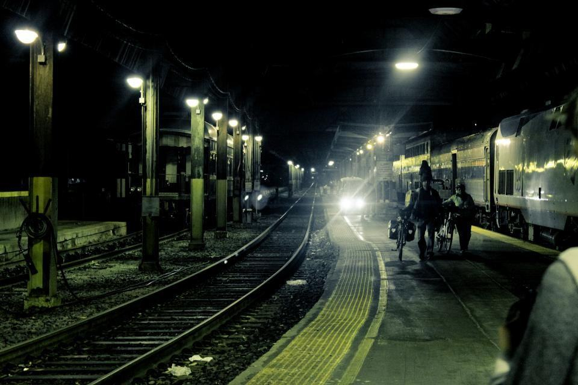
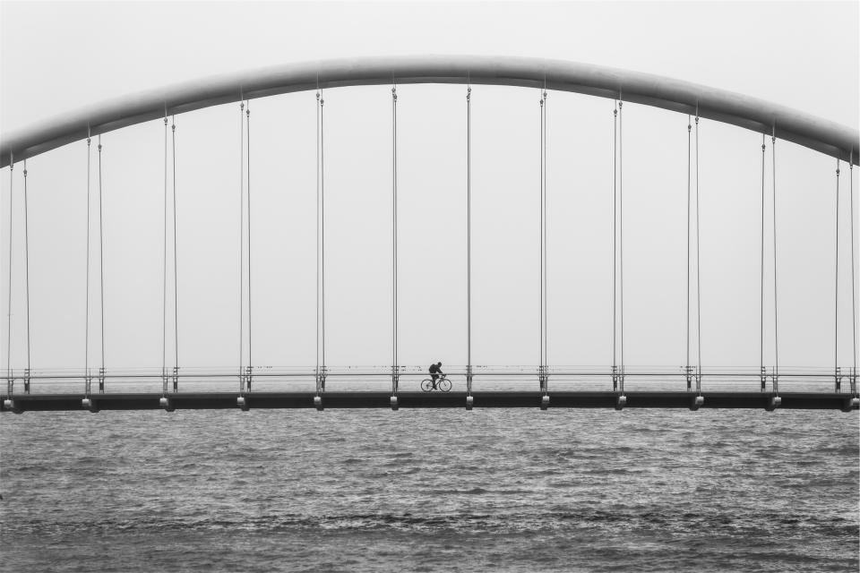
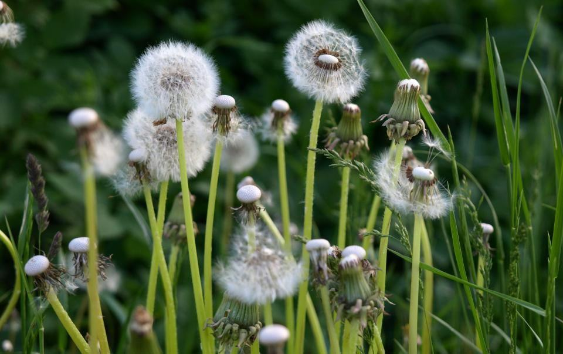
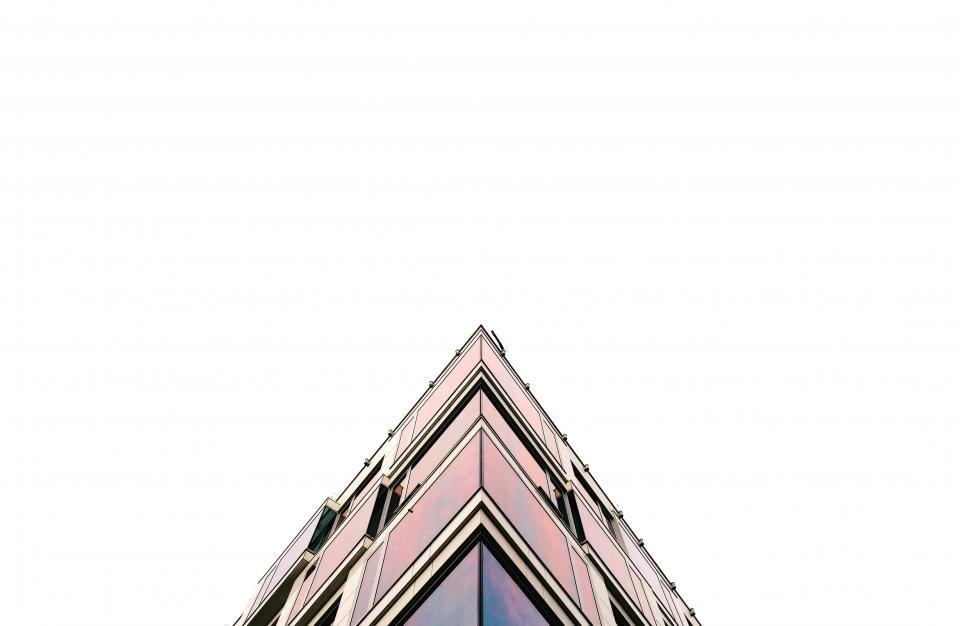

Vi bygger där land möter vatten
Kajer i Gdynia, broar över Göta älv, dubbelspår genom Skåne och vallar som skyddar städer mot högvatten. 11 400 medarbetare i sju länder.
Ett bolag för varje strandlinje
- Hamnar och farleder
Ebbesund Marin AB
Bygger kajer, vågbrytare och fundament från vattnet med egna dykare och befälhavare.

- Broar
Ebbesund Bro AB
Projekterar och bygger broar i stål och betong, med egen stålverkstad i Landskrona.

- Järnväg
Ebbesund Rail A/S
Bygger och underhåller järnväg i Sverige, Danmark och norra Tyskland från huvudkontoret i Köpenhamn.

- Klimatanpassning
Ebbesund Kustskydd AB
Planerar och bygger skydd mot högvatten och skyfall åt kommuner och hamnbolag.

Aktuellt från kusten


Var ska det byggas?
Hamnar och kajer
Containerkajer, färjelägen och djuphamnar för fartyg upp till 400 meter.
Läs merBroar
Vägbroar, järnvägsbroar och klaffbroar i stål och betong.
Läs merJärnväg
Dubbelspår, bangårdar och kontaktledning i Sverige, Danmark och Tyskland.
Läs merKustskydd
Vallar, slussportar och strandfodring som skyddar städer mot högvatten.
Läs merMuddring
Fördjupning av farleder och miljömuddring av förorenade sediment.
Läs merHavsbaserad vind
Fundament och kabelförläggning för vindparker i Östersjön.
Läs merJobb till sjöss
Dykare, befälhavare, brobyggare och ingenjörer.
Läs merAktieägare
Rapporter och kalender för EBBE B.
Läs mer
Senaste pressmeddelandena

Delårsrapport januari–september 2026
Klimatanpassning ökade med 31 procent och orderstocken nådde 52 miljarder kronor.
Läs mer
Ny eldriven bogserbåt levererad
Ebbe XII är flottans tredje helelektriska bogserbåt och baseras i Malmö hamn.
Läs mer
Ebbesund får kustskyddsuppdrag i Hamburg
Uppdraget omfattar 2,4 kilometer förstärkt flodvall längs Elbe.
Läs mer
Bokslutskommuniké 2025
Rekordår med omsättning på 39 miljarder kronor och förbättrad marginal.
Läs mer
Kommande händelser
- feb102027
 Nästa
NästaBokslutskommuniké 2026
- maj42027
 Kommande
KommandeÅrsstämma, Malmö
- apr282027
 Kommande
KommandeDelårsrapport januari–mars 2027
EBBE B143,80 SEK +0,4 %Nasdaq Stockholm Large Cap · exempeldata
- PDFDelårsrapport januari–september 2026
- PDFDelårsrapport januari–juni 2026
- PDFDelårsrapport januari–mars 2026
Hamnar, broar och vallar


Från Malmö hamn till sju länder
- 01 / 07
 1898
1898Bröderna Ebbesund bygger Malmös inre hamn.
- 02 / 07
 1934
1934Första stora bron – över Lagan i Halmstad.
- 03 / 07
 1961
1961Egen stålverkstad och torrdocka i Landskrona.
- 04 / 07
 1995
1995Ebbesund bygger landfästen till Öresundsförbindelsen.
- 05 / 07
 2001
2001Ebbesund noteras på Stockholmsbörsen efter Öresundsbrons invigning.
- 06 / 07
 2014
2014Förvärv av ett järnvägsbolag i Köpenhamn blir Ebbesund Rail.
- 07 / 07
 2022
2022Kustskydd blir eget affärsområde.
- Illustrationsbild
 Ebbesund i siffror
Ebbesund i siffror128 år med fötterna i vattnet
- 0139mdr krOmsättning 2025
- 02
 46fartygEgen arbetsflotta
46fartygEgen arbetsflotta - 03640Broar sedan 1950
- 045,1%Rörelsemarginal
Bröderna Carl och Otto Ebbesund fick 1898 uppdraget att bygga den nya inre hamnen i Malmö. Kajerna står fortfarande, och företaget har sedan dess byggt hamnar, broar och järnvägar längs hela Östersjökusten.
Alla nyckeltal
- Hav och klimat
Fartygen är vårt största utsläpp
- Illustrationsbild

Två tredjedelar av koncernens koldioxidutsläpp kommer från arbetsfartygen. Sedan 2022 byggs flottan om: nya bogserbåtar går på el och HVO, och pråmar ansluts till landström när de ligger stilla. Vid muddring följer vi grumlighet med bojar i realtid och stoppar arbetet om gränsvärdet passeras.
Läs om vårt hållbarhetsarbete- –60 %utsläpp från flottan till 2030 jämfört med 2020
- 100 %landström för fartyg i egna hamnbaser 2027
- 0överskridna grumlighetsvärden vid muddring
Runt Östersjön och Nordsjön
Varje kontor har en egen hamnbas där fartygen utgår från.
 01
01 02
02Landskrona
Stålverkstad och torrdocka för brospann och kajelement.
 03
03Göteborg
Ebbesund Bro och projektkontor för Göta älvs broar.
 04
04Köpenhamn
Huvudkontor för Ebbesund Rail A/S och danska kustskydd.
 05
05Hamburg
Ebbesund Hafenbau GmbH och Ebbesund Rail GmbH.

06Gdańsk
Hamnbas, torrdocka och 1 300 medarbetare i Polen.
 07
07Tallinn
Ebbesund Eesti, hamnar och farleder i Baltikum.
 08
08Rotterdam
Ebbesund Marine B.V., muddring och havsvindsfundament i Nordsjön.
 09
09Bergen
Kajer och färjelägen längs norska västkusten.
Illustrationsbilder